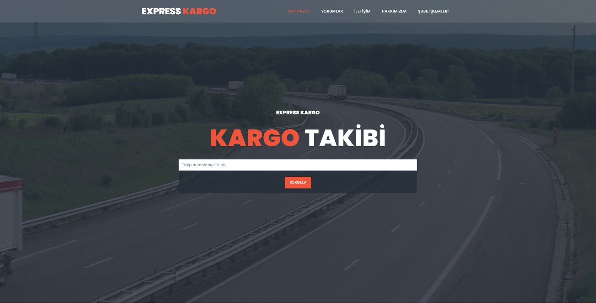
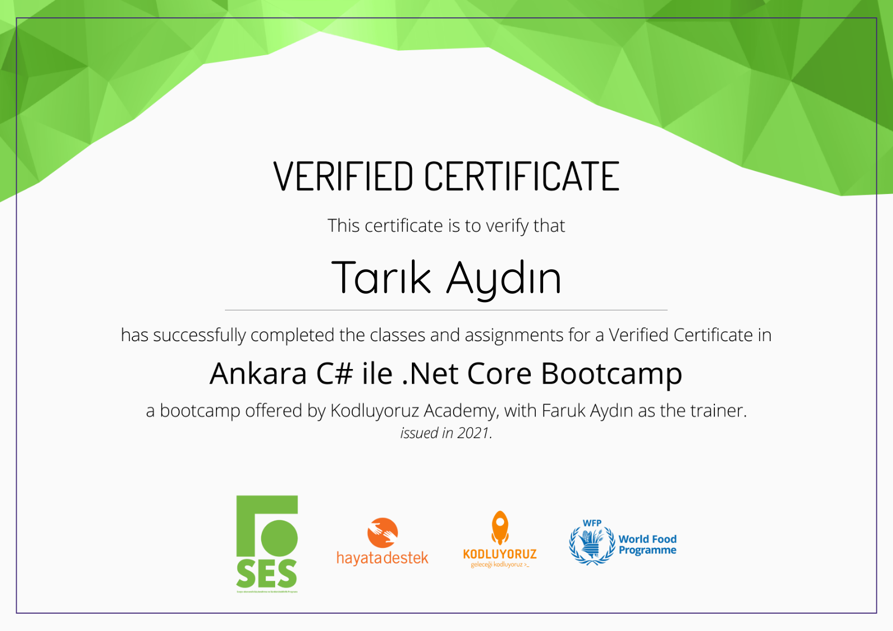

ExpressCargo
ExpressCargo, Kodluyoruz K130 Ankara C# ile .Net Core Bootcamp bitirme projesi olarak Tarık Aydın tarafından Ekim 2021 tarihinde hazırlanmıştır.
Bu proje, Asp.Net Core 5.0 MVC ile geliştirilmiş bir kargo otomasyonudur. Projede EntityFramework, FluentValidation, AutoMapper kütüphaneleri kullanılmıştır.
Kullanım Senaryosu
Kargo Şubeleri, şube adları ve şifreleri ile sisteme giriş yaparlar. Giriş yaptıktan sonra yeni kargo kabulü, var olan kargoların durumunu güncelleyebilme yetkilerine sahiptirler. Her yeni kargo girişinde 12 haneli random bir takip numarası oluşturulmaktadır. Kargoların güncellenme ise aşamaları tarih bilgisi ile birlikte veritabanına tek tek kaydedilmekte olup, geçilen bir aşamadan geriye dönük güncelleme mümkün değildir.
Her şube sadece göndericisi veya alıcısı olduğu kargolar üzerinde görüntüleme ve güncelleme yetkisine sahiptir. Tüm şubeler, iletişim sayfasından iletilen mesajları okuyabilir ve silebilir, buna ek olarak siteye yapılan yorumları onaylama ve silme, şifre değiştirme yetkilerine sahiptir.
Herkese açık arayüzde ise kullanıcılar kargo takip numaraları ile takip işlemlerini yapabilir, firmamıza yorum bırakabilir, iletişim formuyla bilgi edinebilirler.
Teknik Detaylar
Bu proje Asp.Net Core 5.0 MVC ile 4 katmanlı mimari üzerine kurulmuştur. EntityLayer, DataAccessLayer, BusinessLayer ve PresentationLayer katmanlarından oluşmaktadır.
Veritabanı işlemleri için EntityFramework ile Code First yaklaşımı kullanılmıştır. Kullanıcıdan alınan tüm girdiler FluentValidation kütüphanesi ile validasyon kontrolünden geçmektedir.
View'larda entity kullanılmamıştır. Her view için ViewModel yazılmış olup bu ViewModeller AutoMapper kütüphanesi kullanılarak entitylere maplenmiştir.
Kullanıcı şifreleri veritabanında SHA512 algoritması ile hashlenmiş olarak tutulmaktadır.
Runtime esnasında karşılaşılan hatalar Middleware yardımıyla veritabanına kayıt edilmektedir. Bu hatalar yönetici panelinde liste olarak görülebilmektir.
Frontend tarafında hazır template kullanılmış olup, ajax işlemleri için tarafımca birkaç script yazılmıştır.
Projenin GitHub reposuna ulaşmak için tıklayın.